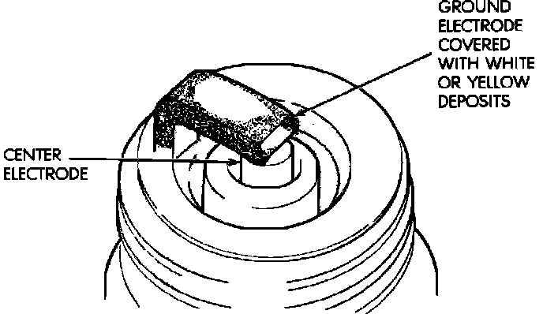

Scavenger Deposits
Scavenger Deposits:

Fuel scavenger deposits may be either white or yellow. They may appear to be harmful, but this is a normal condition caused by chemical additives in certain fuels. These additives are designed to change the chemical nature of deposits and decrease spark plug misfire tendencies. Notice that accumulation on the ground electrode and shell area may be heavy, but the deposits are easily removed. Spark plugs with scavenger deposits can be considered normal in condition and can be cleaned using standard procedures.